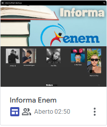

Informa Enem
Site no qual a intenção é postar conteúdos relevantes para auxiliar no estudo sobre áreas do ENEM.
H23
Redação
Essa é a nota de uma redação avaliativa no formato ENEM.
H?
Biografia Profissional
Haviamos feito uma biografia num documento(docsx), e nessa atividade trouxemos o texto para uma apresentação mais formal na plataforma do canva, juntamente com uma foto acompanhando o texto.
H22
Pai contra Mãe - reescrita
Reescrevemos a história do conto de Machado de Assis, “Pai contra mãe”, na visão da mãe, mas de um ponto de vista de nossas interpretações.
H?